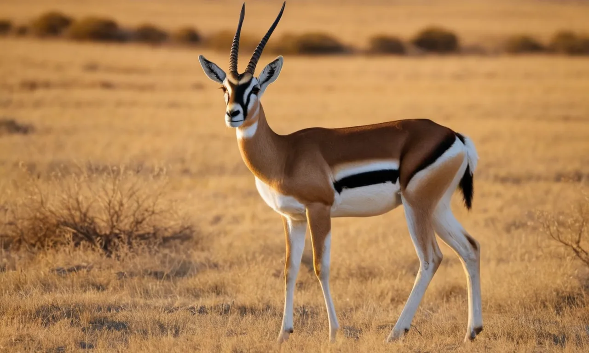
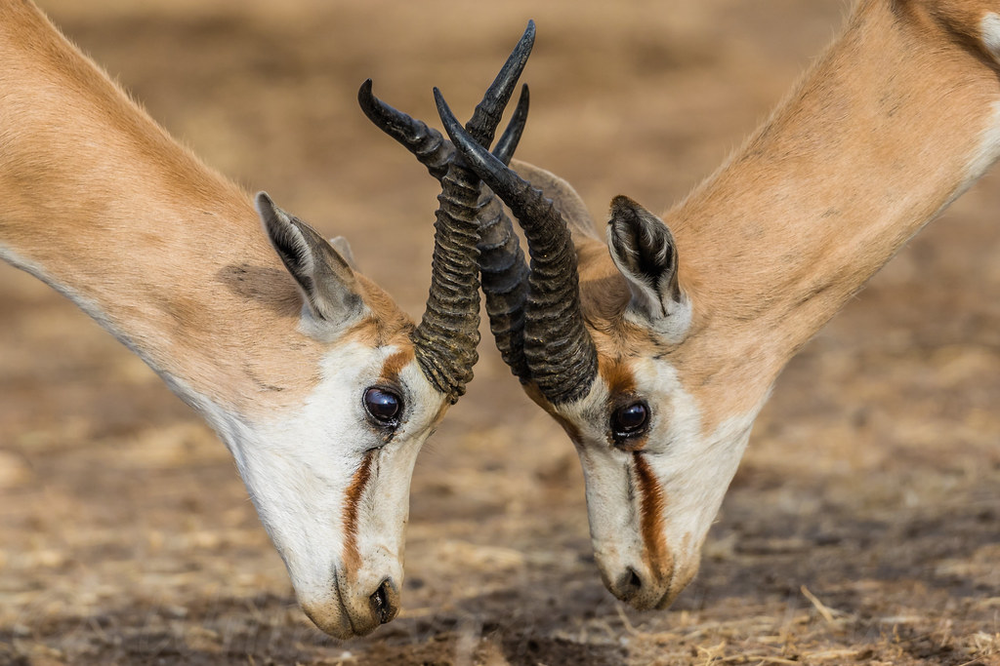
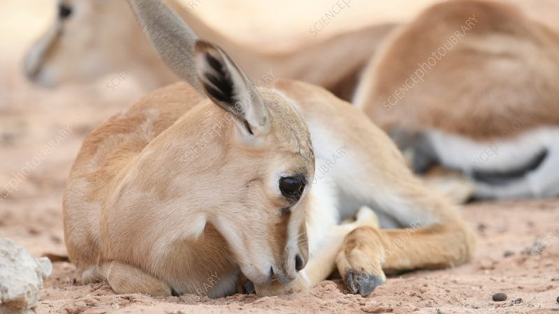
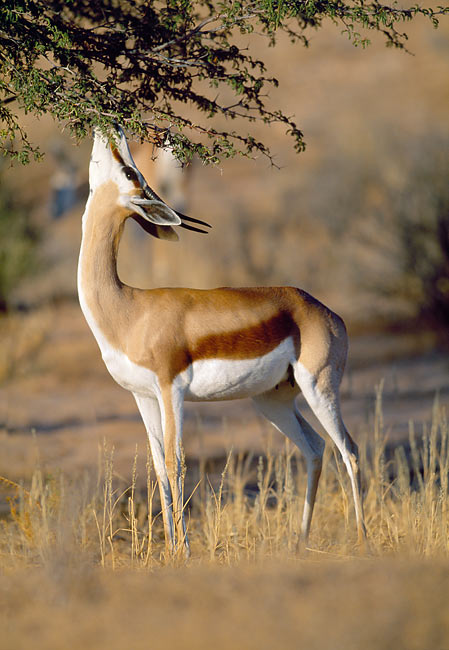

AFRICAN SPRINGBOK
-

The Springbok is the most abundant antelope in the central and western parts of South Africa. Some herds are still free roaming within some of its natural range, but most are now confined to farmlands and reserves. They are a common feature in most of South Africa's national, provincial and private reserves. Springbok are the most common antelope in neighbouring Namibia.
-

- Both male and females have horns, but the females horns are much shorter. The tips of the springbok's horns curve inwards at the top, giving them an almost 'heart-shaped' appearance.
- When fighting, springboks will lock their horns, sometimes becoming inextricably bound together, which leads to vehement circling with severe jerking and twisting to try to disentangle each other.
-

After a gestation period of 25 weeks single lambs are born. Springbok lambs are hidden for the first two days after birth. Most ewes breed every year, some even twice. Young are weaned at about four months and ewes become sexually mature at the age of seven months.
Only rams establish territories for mating opportunities. The exception is territorial rams, which prefer to live in the solitude of their territories. Herd composition is flexible. -

The south african spring bok are herbivours.